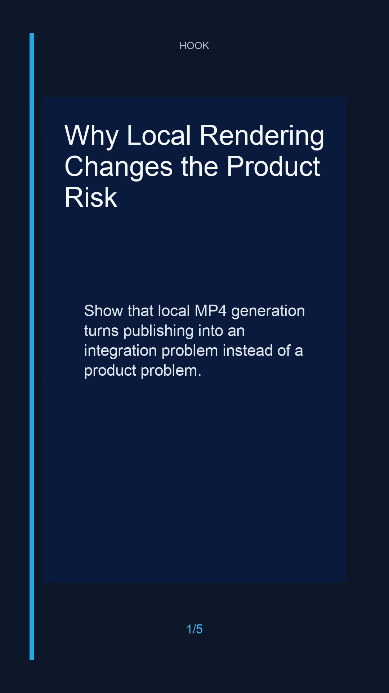

Proof Blue / 5 scenes
Why Local Rendering Changes the Product Risk
Show that local MP4 generation turns publishing into an integration problem instead of a product problem.
Draft ready

QA checklist
- Script has a hook, supporting points, and close.
- Storyboard contains one or more timed scenes.
- Captions are present for each scene.
- Metadata includes platform targets.
- Design brief covers visual, motion, audio, caption, and platform decisions.
- Renderer can create a local MP4, thumbnail, and preview frame from this package.